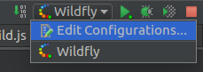
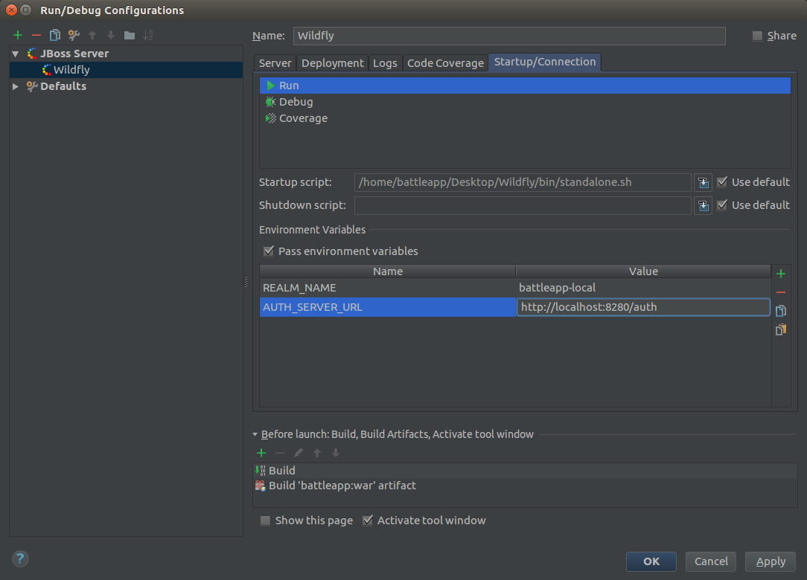

Secure the jax-rs service
Patch Wildfly with the Keycloak adapter
The first thing we've to change is the Dockerfile of the REST service.
Wildfly need the Keyclaok adapter that it can use Keycloak. Luckily there's
already a Docker image for that jboss/keycloak-adapter-wildfly. Our whole
Dockerimage looks like the flowing:
FROM jboss/keycloak-adapter-wildfly:2.4.0.Final
MAINTAINER Robert Brem <brem_robert@hotmail.com>
ENV DEPLOYMENT_DIR ${JBOSS_HOME}/standalone/deployments/
ADD target/battleapp.war ${DEPLOYMENT_DIR}
That we can test our service locally as well we've to patch our local Wildfly as well. We've to do exactly the same as the Docker image does.
Change into the local Wildfly directory and execute the following command:
KEYCLOAK_VERSION=2.4.0.Final curl -L https://downloads.jboss.org/keycloak/$KEYCLOAK_VERSION/adapters/keycloak-oidc/keycloak-wildfly-adapter-dist-$KEYCLOAK_VERSION.tar.gz | tar zx
Then execute the following command:
sed -i -e 's/<extensions>/&\n <extension module="org.keycloak.keycloak-adapter-subsystem"\/>/' standalone/configuration/standalone.xml && \
sed -i -e 's/<profile>/&\n <subsystem xmlns="urn:jboss:domain:keycloak:1.1"\/>/' standalone/configuration/standalone.xml && \
sed -i -e 's/<security-domains>/&\n <security-domain name="keycloak">\n <authentication>\n <login-module code="org.keycloak.adapters.jboss.KeycloakLoginModule" flag="required"\/>\n <\/authentication>\n <\/security-domain>/' standalone/configuration/standalone.xml
Setup the project with Keycloak
To secure the REST service we've to create a web.xml file like we would do it
for normal basic authentication. The flowing web.xml is located in the
src/main/webapp/WEB-INF folder.
<web-app xmlns="http://java.sun.com/xml/ns/javaee"
xmlns:xsi="http://www.w3.org/2001/XMLSchema-instance"
xsi:schemaLocation="http://java.sun.com/xml/ns/javaee http://java.sun.com/xml/ns/javaee/web-app_3_0.xsd"
version="3.0">
<security-constraint>
<web-resource-collection>
<web-resource-name>health</web-resource-name>
<url-pattern>/resources/health</url-pattern>
</web-resource-collection>
<!-- OMIT auth-constraint -->
</security-constraint>
<security-constraint>
<web-resource-collection>
<web-resource-name>cors</web-resource-name>
<url-pattern>/*</url-pattern>
<http-method>GET</http-method>
<http-method>POST</http-method>
<http-method>PUT</http-method>
<http-method>DELETE</http-method>
</web-resource-collection>
<auth-constraint>
<role-name>user</role-name>
</auth-constraint>
</security-constraint>
<login-config>
<auth-method>KEYCLOAK</auth-method>
<realm-name>this is ignored currently</realm-name>
</login-config>
<security-role>
<role-name>admin</role-name>
</security-role>
<security-role>
<role-name>user</role-name>
</security-role>
</web-app>
Here we can see the roles admin and user we've previously created in the
Keycloak console. Additionally there's a health endpoint that's not secured.
This is the endpoint on which Kubernetes checks if the application is deployed
and therefore ready. We're going to create this endpoint later.
Now we've to define where our Keycloak server is running and which realm we
want to use. This can be done in a keycloak.json that's located in the same
folder src/main/webapp/WEB-INF.
{
"realm": "${env.REALM_NAME}",
"bearer-only": true,
"auth-server-url": "${env.AUTH_SERVER_URL}",
"ssl-required": "none",
"resource": "battleapp"
}
That we can use the same war on different stages we have to set the realm
name and the server url over environment variables. For the local setup we've
to open the Wildfly configuration:

Change in the Startup/Connection tab and add the two environment variables.

Create the health check
That Kubernetes recognized if the application is up and running we've to
create the health check we've already defined in the web.xml.
@Path("health")
public class HealthResource {
@Dedicated
@Inject
ExecutorService healthPool;
@GET
public void getHealth(@Suspended AsyncResponse response) {
CompletableFuture
.supplyAsync(this::getHealthText, healthPool)
.thenAccept(response::resume);
}
public String getHealthText() {
return "everything ok!";
}
}
Now we can start the local Wildfly with the secured application.
Secure test environment
To let the application run in our test stage we've to make some adaptions
to the start.js file from the start test environment project.
First of all we've to change the test url from
http://disruptor.ninja:31080/battleapp/resources/users to
http://disruptor.ninja:31080/battleapp/resources/health.
Then we've to add the two environment variables for Keycloak:
...
var realmName = "battleapp-test";
var authServerUrl = "https://disruptor.ninja:30182/auth";
...
dfw.write(" env:\n");
dfw.write(" - name: REALM_NAME\n");
dfw.write(" value: \"" + realmName + "\"\n");
dfw.write(" - name: AUTH_SERVER_URL\n");
dfw.write(" value: \"" + authServerUrl + "\"\n");
...
Now the deployment on the test stage is secured.
Secure prod environment
To let the application run in our prod stage we've to make some adaptions
to the start.js file from the canary environment project.
First of all we've to change the test url from
http://disruptor.ninja:30080/battleapp/resources/users to
http://disruptor.ninja:30080/battleapp/resources/health.
Then we've to add the two environment variables for Keycloak:
...
var realmName = "battleapp";
var authServerUrl = "https://disruptor.ninja:30182/auth";
...
dfw.write(" env:\n");
dfw.write(" - name: REALM_NAME\n");
dfw.write(" value: \"" + realmName + "\"\n");
dfw.write(" - name: AUTH_SERVER_URL\n");
dfw.write(" value: \"" + authServerUrl + "\"\n");
...
System test of the secured service
Our system test tries to test the secured users url. Therefore we've to
tell the test how to access the secured endpoint.
To access the service we need to add the keycloak-wildfly-adapter:
<dependency>
<groupId>org.keycloak</groupId>
<artifactId>keycloak-wildfly-adapter</artifactId>
<version>2.4.0.Final</version>
<scope>test</scope>
</dependency>
Now we can create a class that requests a token form the Keycloak server:
public class KeycloakHeaderCreater {
public static final String CLIENT_ID = "battleapp-frontend";
public static final String REALM = System.getenv("REALM_NAME");
public static final String KEYCLOAK_URL = System.getenv("KEYCLOAK_URL");
public static AccessTokenResponse getTokenResponse(String user, String password) throws IOException {
HttpClient client = new HttpClientBuilder().disableTrustManager().build();
try {
HttpPost post = new HttpPost(KeycloakUriBuilder.fromUri(KEYCLOAK_URL)
.path(ServiceUrlConstants.TOKEN_PATH).build(REALM));
List<NameValuePair> formparams = new ArrayList<>();
formparams.add(new BasicNameValuePair(OAuth2Constants.GRANT_TYPE, "password"));
formparams.add(new BasicNameValuePair("username", user));
formparams.add(new BasicNameValuePair("password", password));
formparams.add(new BasicNameValuePair(OAuth2Constants.CLIENT_ID, CLIENT_ID));
UrlEncodedFormEntity form = new UrlEncodedFormEntity(formparams, "UTF-8");
post.setEntity(form);
HttpResponse response = client.execute(post);
int status = response.getStatusLine().getStatusCode();
HttpEntity entity = response.getEntity();
if (status != 200) {
throw new IOException("Bad status: " + status);
}
if (entity == null) {
throw new IOException("No Entity");
}
InputStream is = entity.getContent();
try {
AccessTokenResponse tokenResponse = JsonSerialization.readValue(is, AccessTokenResponse.class);
return tokenResponse;
} finally {
try {
is.close();
} catch (IOException ignored) {
}
}
} finally {
client.getConnectionManager().shutdown();
}
}
}
We need a token when we request the users from the service:
@Test
public void shouldReturn200() throws IOException {
String token = KeycloakHeaderCreater
.getTokenResponse(
System.getenv("APPLICATION_USER_NAME"),
System.getenv("APPLICATION_PASSWORD"))
.getToken();
Response response = provider
.target()
.request()
.header("Authorization", "Bearer " + token)
.get();
assertThat(response.getStatus(), is(200));
}
You can run the test locally with the following command:
HOST=localhost PORT=8080 APPLICATION_USER_NAME=rob APPLICATION_PASSWORD=1234 REALM_NAME=battleapp-local KEYCLOAK_URL=http://localhost:8280/auth mvn clean install failsafe:integration-test failsafe:verify
Finally we've to add the environment variables in the pipeline project:
withEnv([ "VERSION=1.0.${currentBuild.number}",
"REGISTRY_EMAIL=brem_robert@hotmail.com",
"KUBECTL=kubectl",
"HOST=disruptor.ninja",
"KEYCLOAK_URL=https://disruptor.ninja:30182/auth"]) {
...
stage "system test"
node {
git url: "http://disruptor.ninja:30130/rob/battleapp-st"
def mvnHome = tool 'M3'
sh "PORT=31080 REALM_NAME=battleapp-test ${mvnHome}/bin/mvn clean install failsafe:integration-test failsafe:verify"
step([$class: 'JUnitResultArchiver', testResults: '**/target/failsafe-reports/TEST-*.xml'])
}
...
UI test of the secured service
Our ui test tries to test the secured users url. Therefore we've to
change the url to the health url.
@Location("http://disruptor.ninja:31080/battleapp/resources/health")
public class BattleAppPage {
}
And the expected text:
@RunAsClient
@RunWith(Arquillian.class)
public class BattleAppIT {
@Drone
WebDriver browser;
@Test
public void shouldContainRobert(@InitialPage BattleAppPage page) {
String expectedToContain = "everything ok!";
String content = browser.getPageSource();
assertThat(content, containsString(expectedToContain));
}
}
The test can locally be executed with the same run configuration like before.
Last test of the secured service
Our last test tries to test the secured users url. Therefore we've to
change the url to the health url inside the Jenkins pipeline:
stage "last test"
node {
git url: "https://github.com/robertBrem/BattleApp-LT"
def mvnHome = tool 'M3'
sh "${mvnHome}/bin/mvn clean verify -Dperformancetest.webservice.host=disruptor.ninja -Dperformancetest.webservice.port=31080 -Dperformancetest.webservice.threads=5 -Dperformancetest.webservice.iterations=500 -Dperformancetest.webservice.url=/battleapp/resources/health"
archiveArtifacts artifacts: 'target/reports/*.*', fingerprint: true
}
The test can locally be executed with the following command:
mvn clean verify -Dperformancetest.webservice.host=localhost -Dperformancetest.webservice.port=8080 -Dperformancetest.webservice.threads=2 -Dperformancetest.webservice.iterations=50 -Dperformancetest.webservice.url=/battleapp/resources/health
Consumer driven contract test of the secured service
The consumer driven contract test has to be adapted exaclty the same way as the system test from before.
public class BattleAppIT {
@Rule
public JAXRSClientProvider provider = buildWithURI("http://" + System.getenv("HOST") + ":" + System.getenv("PORT") + "/battleapp/resources/users");
@Test
public void shouldReturnDan() throws IOException {
String expectedToContain = "Dan";
String token = KeycloakTokenCreator
.getTokenResponse(
System.getenv("APPLICATION_USER_NAME"),
System.getenv("APPLICATION_PASSWORD"))
.getToken();
String response = provider
.target()
.request()
.header("Authorization", "Bearer " + token)
.get(String.class);
assertThat(response, containsString(expectedToContain));
}
}
The test can be locally executed with the following command:
HOST=localhost PORT=8080 APPLICATION_USER_NAME=rob APPLICATION_PASSWORD=1234 REALM_NAME=battleapp-local KEYCLOAK_URL=http://localhost:8280/auth mvn clean install failsafe:integration-test failsafe:verify
The pipeline step has to be extended with the REALM_NAME as well as the
system test was before.
stage "consumer driven contract test"
node {
git url: "http://disruptor.ninja:30130/rob/battleapp-cdct"
def mvnHome = tool 'M3'
sh "PORT=31080 REALM_NAME=battleapp-test ${mvnHome}/bin/mvn clean install failsafe:integration-test failsafe:verify"
step([$class: 'JUnitResultArchiver', testResults: '**/target/failsafe-reports/TEST-*.xml'])
}